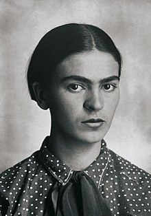
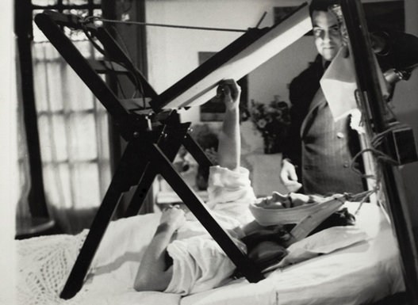
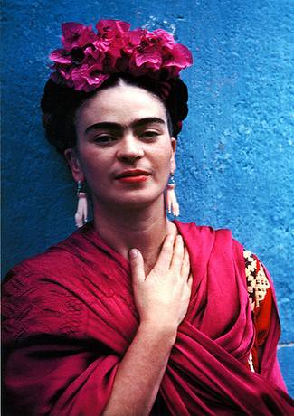
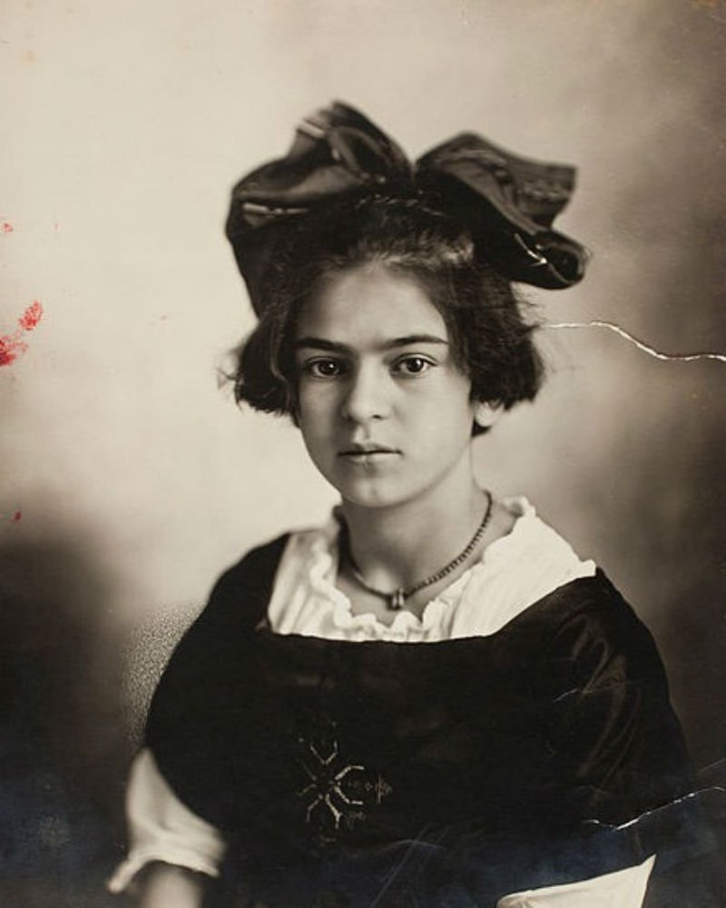

"Eu sou minha única musa, o assunto que conheço melhor."
Frida Kahlo (1907-1954) foi uma pintora mexicana conhecida por seus autorretratos de inspiração surrealista e também por suas fotografias.
Frida Kahlo, nome artístico de Magdalena Carmen Frida Kahlo y Calderón, nasceu na vila de Coyoacán, no México, no dia 6 de julho de 1907. Filha de pai alemão e mãe espanhola desde pequena teve uma saúde debilitada. Com seis anos contraiu poliomielite que lhe deixou uma sequela no pé. Com 18 anos, sofreu um grave acidente de ônibus que a deixou um longo período no hospital.
Apesar de deprimida e incapacitada de andar, Frida passou a pintar sua imagem, com um espelho pendurado na sua frente e um cavalete adaptado para que pudesse pintar deitada. Dizia: “Para que preciso de pés quando tenho asas para voar”. Sua primeira pintura foi “Autorretrato em um Vestido de Veludo”, dedicado a Alejandro Gómez Arias, seu ex-noivo.
O trabalho de Kahlo como artista permaneceu relativamente desconhecido até o final dos anos 1970, quando seu trabalho foi redescoberto por historiadores de arte e ativistas políticos. No início dos anos 1990, ela se tornou não apenas uma figura reconhecida na história da arte, mas também considerada um ícone para Chicanos, o movimento feminista e o movimento LGBTQ. O trabalho de Kahlo tem sido celebrado internacionalmente como emblemático das tradições nacionais e indígenas mexicanas e pelas feministas, pelo que é visto como uma descrição intransigente da experiência e forma feminina.
Nascimento
Frida Kahlo, nome artístico de Magdalena Carmen Frida Kahlo y Calderón, nasceu na vila de Coyoacán, no México, no dia 6 de julho de 1907. Filha de pai alemão e mãe espanhola desde pequena teve uma saúde debilitada. Com seis anos contraiu poliomielite que lhe deixou uma sequela no pé. Com 18 anos, sofreu um grave acidente de ônibus que a deixou um longo período no hospital.

Primeira Obra
Sua primeira pintura foi “Autorretrato em um Vestido de Veludo”, dedicado a Alejandro Gómez Arias, seu ex-noivo.

Casamento e Viagens
Em 1929, com 22 anos, Frida Kahlo casa-se com o Diego Rivera e vão morar na “Casa Azul”, onde Frida nasceu. Em 1930, Frida engravida, mas sofre um aborto espontâneo. Nesse mesmo ano, foi com o marido para os Estados Unidos, onde ele realizava exposições. Moraram nas cidades de Detroit, São Francisco e Nova Iorque. Nesse período, sofre um segundo aborto. Dedica à pintura, realiza um grande número de autorretratos – de inspiração surrealista, apesar de negar dizendo: “Nunca pintei sonhos e sim minha própria realidade”. Ficou nos Estados Unidos até 1934.

Retorno ao México
Em 1934, o casal retorna ao México. Frida sofre mais um aborto. Nessa época, tem os dedos do pé direito amputados. Em 1935, Frida e Rivera se separam. Rivera se relaciona com a irmã de Frida, Cristina. Logo depois, Frida e Rivera voltam a viver juntos. Em 1936, Frida passa por nova cirurgia no pé e, sofre com fortes dores na coluna. Mesmo debilitada, continua pintando.